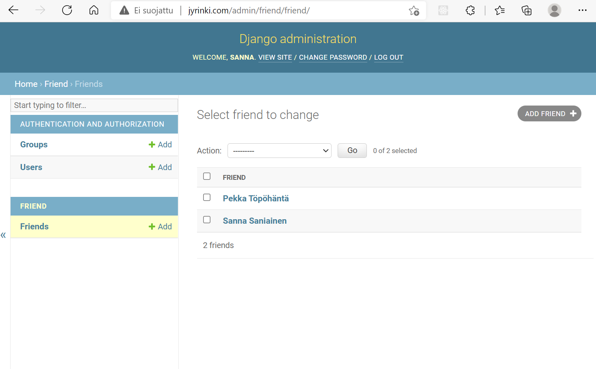

Harjoitus H5
Lähteet
Karvinen, T. 2022. Django 4 Instant Customer Database Tutorial. Luettavissa https://terokarvinen.com/2022/django-instant-crm-tutorial/ . Luettu 24.2.2022.
Karvinen, T. 2022. Deploy Django 4 - Production Install. Luettavissa https://terokarvinen.com/2022/deploy-django/ . Luettu 24.2.2022.
Tehtävä a, CRUD sovellus Django kehityspalvelimelle
Asennetaan Django kehitysympäristö
Asennetaan virtualenv, jonka mukana tulee uusimmat python paketit, kuten Django
$ sudo apt-get -y install virtualenv
Luodaan /env hakemisto, jolla on käytössä uusimmat paketit ja python3
$ virtualenv --system-site-packages -p python3 env/
Käytetään uutta virtual environmentia
$ source env/bin/activate
Tarkastetaan, että asennus menee virtuaaliseen ympäristöön
$ which pip
/home/sanna/env/bin/pip
Asennetaan micro tekstieditori-ohjelma
$ sudo apt-get install micro
Luodaan requirements.txt tiedosto ja kirjoitetaan sinne ajettava käsky 'django'
$ micro requirements.txt # kirjoitettu sisällöksi django
Tarkastetaan sisältö
$ cat requirements.txt
django
Asennetaan django
$ pip install -r requirements.txt
Collecting django
Downloading Django-4.0.2-py3-none-any.whl (8.0 MB)
|████████████████████████████████| 8.0 MB 1.0 MB/s
Collecting asgiref<4,>=3.4.1
Downloading asgiref-3.5.0-py3-none-any.whl (22 kB)
Collecting sqlparse>=0.2.2
Downloading sqlparse-0.4.2-py3-none-any.whl (42 kB)
|████████████████████████████████| 42 kB 157 kB/s
Installing collected packages: sqlparse, asgiref, django
Successfully installed asgiref-3.5.0 django-4.0.2 sqlparse-0.4.2
Tarkastetaan asennuksen versio
$ django-admin --version
4.0.2
Luodaan oma Django-projekti
Djangossa koko webbisivu on django-projekti, luodaan oma django-projekti nimeltään sannandjango
$ django-admin startproject sannandjango
Yritetään käynnistää projekti
$ cd sannandjango/
$ ./manage.py runserver
Watching for file changes with StatReloader
Performing system checks...
System check identified no issues (0 silenced).
You have 18 unapplied migration(s). Your project may not work properly until you apply the migrations for app(s): admin, auth, contenttypes, sessions.
Run 'python manage.py migrate' to apply them.
February 23, 2022 - 19:43:17
Django version 4.0.2, using settings 'sannandjango.settings'
Starting development server at http://127.0.0.1:8000/
Quit the server with CONTROL-C.
Käynnistys valittaa migraatioiden puutteesta, muttei vielä välitetä tästä, vaan testataan selaimella http://127.0.0.1:8000/ osoitetta, asennus toimii!!
Tehdään käyttäjät admin-käyttöliittymälle
Admin käyttöliittymälle pääsee, muttei vielä ole tunnusta, joka toimisi
Päivitetään djangon tietokannat
$ ./manage.py makemigrations
No changes detected
$ ./manage.py migrate
Operations to perform:
Apply all migrations: admin, auth, contenttypes, sessions
Running migrations:
Applying contenttypes.0001_initial... OK
Applying auth.0001_initial... OK
Applying admin.0001_initial... OK
Applying admin.0002_logentry_remove_auto_add... OK
Applying admin.0003_logentry_add_action_flag_choices... OK
Applying contenttypes.0002_remove_content_type_name... OK
Applying auth.0002_alter_permission_name_max_length... OK
Applying auth.0003_alter_user_email_max_length... OK
Applying auth.0004_alter_user_username_opts... OK
Applying auth.0005_alter_user_last_login_null... OK
Applying auth.0006_require_contenttypes_0002... OK
Applying auth.0007_alter_validators_add_error_messages... OK
Applying auth.0008_alter_user_username_max_length... OK
Applying auth.0009_alter_user_last_name_max_length... OK
Applying auth.0010_alter_group_name_max_length... OK
Applying auth.0011_update_proxy_permissions... OK
Applying auth.0012_alter_user_first_name_max_length... OK
Applying sessions.0001_initial... OK
Asennetaan pwgen ja luodaan sillä salasana
$ sudo apt-get install pwgen
[sudo] password for sanna:
Reading package lists... Done
Building dependency tree... Done
Reading state information... Done
The following NEW packages will be installed:
pwgen
0 upgraded, 1 newly installed, 0 to remove and 0 not upgraded.
Need to get 19,6 kB of archives.
After this operation, 52,2 kB of additional disk space will be used.
Get:1 http://deb.debian.org/debian bullseye/main amd64 pwgen amd64 2.08-2 [19,6 kB]
Fetched 19,6 kB in 0s (59,6 kB/s)
Selecting previously unselected package pwgen.
(Reading database ... 230419 files and directories currently installed.)
Preparing to unpack .../pwgen_2.08-2_amd64.deb ...
Unpacking pwgen (2.08-2) ...
Setting up pwgen (2.08-2) ...
Processing triggers for man-db (2.9.4-2) ...
$ pwgen -s 20 1
Luodaan admin käyttäjä käyttäen luotua salasanaa
$ ./manage.py createsuperuser
Username (leave blank to use 'sanna'):
Email address:
Password:
Password (again):
Superuser created successfully.
Käynnistetään kehityspalvelin uudelleen
$ ./manage.py runserver
Nyt päästään luodulla tunnuksella ja salasanalla kirjautumaan admin-käyttöliittymään
Luodaan admin-käyttöliittymältä uusi käyttäjä minna
Valitaan staff ja superuser status, jotta se saa samat admin-oikeudet
Kirjaudutaan ulos sanna tunnuksesta ja kirjaudutaan uudelleen luodulla minna tunnuksella ja tarkistetaan, että kirjautuminen onnistuu, ja että minnalla on myös oikeus lisätä uusia käyttäjiä
Luodaan Books sovellus
Tehdään Djangolla Books sovellus, joka on yrityksen sähköinen kirjahylly, josta työntekijät voivat ylläpitää yrityksen toimistolla olevaa kirjahyllyä, ja merkitä onko kirja saatavilla vaiko lainattu.
Luodaan sovellus, tämä tekee sovellukselle bookcase-nimisen hakemiston
$ ./manage.py startapp bookcase
Lisätään sovellus sannandjango/settings.py asennettujen sovellusten listaan
$ micro sannandjango/settings.py
...
INSTALLED_APPS = [
'django.contrib.admin',
'django.contrib.auth',
'django.contrib.contenttypes',
'django.contrib.sessions',
'django.contrib.messages',
'django.contrib.staticfiles',
'bookcase' #lisäsin tämän rivin,
]
...
Lisätään modeliin Book
$ micro bookcase/models.py
from django.db import models
class Book(models.Model):
author = models.CharField(max_length=300)
title = models.CharField(max_length=300)
available = models.BooleanField(default=True)
Ajetaan migraatiot, jolloin modeliin mukaan syntyy taulut tietokantaan
(env) sanna@sanna-virtualbox:~/sannandjango$ ./manage.py makemigrations
Migrations for 'bookcase':
bookcase/migrations/0001_initial.py
- Create model Book
(env) sanna@sanna-virtualbox:~/sannandjango$ ./manage.py migrate
Operations to perform:
Apply all migrations: admin, auth, bookcase, contenttypes, sessions
Running migrations:
Applying bookcase.0001_initial... OK
Jotta tietokanta näkyy /admin osoitteessa, se täytyy rekisteröidä
$ micro bookcase/admin.py
from django.contrib import admin
from . import models
admin.site.register(models.Book)
Käynnistetään serveri ja testataan
$ ./manage.py runserver

Lisätään admin käyttöliittymällä muutama kirja
Muokataan models.py tiedostoa siten, että admin-käyttöliittymässä näkyy kirjojen nimet
$ micro bookcase/models.py
from django.db import models
class Book(models.Model):
author = models.CharField(max_length=300)
title = models.CharField(max_length=300)
available = models.BooleanField(default=True)
def __str__(self): # new
if self.available:
return self.author + ' : ' + self.title
else:
return self.author + ' : ' + self.title + ' (NOT AVAILABLE)'
Nyt kirjojen tiedot näkyy listassa
Tehtävä b, Django tuotantoasennus
Päätin tehdä Django tuotantoasennuksen virtuaalipalvelimellani, jonka asensin tehtävässä 4. Virtuaalipalvelimella on jo tehtävässä 4 asennettuna micro tekstieditori, sekä apache2. Tässä tehtävässä vielä korvaan apachen testisivun seuraavalla merkkijonolla.
$ echo "Welcome to jyrinki.com"|sudo tee /var/www/html/index.html
Apachen testisivu näkyy nyt osoitteessa http://jyrinki.com
Staattinen sivu
Teen alkuun apt-get updaten
$ sudo apt-get update
Tehdään aluksi staattinen sivu kotihakemistoni alle
$ cd
$ mkdir -p publicwsgi/sannandjango/static/
$ echo "Statically see you at jyrinki.com."|tee publicwsgi/sannandjango/static/index.html
Tehdään uusi VirtualHost
$ sudoedit /etc/apache2/sites-available/sannandjango.conf
<VirtualHost *:80>
Alias /static/ /home/sanna/publicwsgi/sannandjango/static/
<Directory /home/sanna/publicwsgi/sannandjango/static/>
Require all granted
</Directory>
</VirtualHost>
Enabloidaan uusi web-sivu ja disabloidaan muut
$ sudo a2ensite sannandjango.conf
$ sudo a2dissite 000-default.conf
Testataan, saatiin virheilmoituksia, mutta lopussa teksti syntax ok, ilmeisesti homma ok
sanna@debian-1cpu-1gb-fi-hel1:~$ /sbin/apache2ctl configtest
AH00557: apache2: apr_sockaddr_info_get() failed for debian-1cpu-1gb-fi-hel1
AH00558: apache2: Could not reliably determine the server's fully qualified domain name, using 127.0.0.1. Set the 'ServerName' directive globally to suppress this message
Syntax OK
Käynnistetään apache uudelleen
$ sudo systemctl restart apache2
Testataan selaimella sivua http://jyrinki.com/static/, ja staattinen sivu näyttää toimivan
Luodaan virtual env
$ sudo apt-get -y install virtualenv
$ cd
$ cd publicwsgi/
$ virtualenv -p python3 --system-site-packages env
Asennetaan Django
Asennus tehdään kuten kehitysserverillä
$ source env/bin/activate
$ which pip
/home/sanna/publicwsgi/env/bin/pip
$ micro requirements.txt
django
$ pip install -r requirements.txt
Collecting django
Using cached Django-4.0.2-py3-none-any.whl (8.0 MB)
Collecting asgiref<4,>=3.4.1
Using cached asgiref-3.5.0-py3-none-any.whl (22 kB)
Collecting sqlparse>=0.2.2
Using cached sqlparse-0.4.2-py3-none-any.whl (42 kB)
Installing collected packages: sqlparse, asgiref, django
Successfully installed asgiref-3.5.0 django-4.0.2 sqlparse-0.4.2
$ django-admin --version
4.0.2
Luodaan projekti
Yritin luoda Django-projektin ohjeen mukaan. Se ei kuitenkaan onnistunut, koska sannandjango-hakemisto oli jo luotu staattista sivua varten.
(env) sanna@debian-1cpu-1gb-fi-hel1:~/publicwsgi$ django-admin startproject sannandjango
CommandError: '/home/sanna/publicwsgi/sannandjango' already exists
Poistan sannandjango-hakemiston ja perustan projektin ja lisään sen jälkeen staattisen sivun uudelleen
(env) sanna@debian-1cpu-1gb-fi-hel1:~/publicwsgi$ rm -r sannandjango/
(env) sanna@debian-1cpu-1gb-fi-hel1:~/publicwsgi$ django-admin startproject sannandjango
(env) sanna@debian-1cpu-1gb-fi-hel1:~/publicwsgi$ ls
env requirements.txt sannandjango
(env) sanna@debian-1cpu-1gb-fi-hel1:~/publicwsgi$ mkdir -p publicwsgi/sannandjango/static/
(env) sanna@debian-1cpu-1gb-fi-hel1:~/publicwsgi$ echo "Statically see you at jyrinki.com."|tee publicwsgi/sannandjango/static/index.html
Statically see you at jyrinki.com.
Yhdistetään Python Apacheen
Tehdään sannandjango.conf tiedosto ohjeen mallin mukaan
$ sudoedit /etc/apache2/sites-available/sannandjango.conf
sisältö
Define TDIR /home/sanna/publicwsgi/sannandjango
Define TWSGI /home/sanna/publicwsgi/sannandjango/sannandjango/wsgi.py
Define TUSER sanna
Define TVENV /home/sanna/publicwsgi/env/lib/python3.9/site-packages
<VirtualHost *:80>
Alias /static/ ${TDIR}/static/
<Directory ${TDIR}/static/>
Require all granted
</Directory>
WSGIDaemonProcess ${TUSER} user=${TUSER} group=${TUSER} threads=5 python-path="${TDIR}:${TVENV}"
WSGIScriptAlias / ${TWSGI}
<Directory ${TDIR}>
WSGIProcessGroup ${TUSER}
WSGIApplicationGroup %{GLOBAL}
WSGIScriptReloading On
<Files wsgi.py>
Require all granted
</Files>
</Directory>
</VirtualHost>
Undefine TDIR
Undefine TWSGI
Undefine TUSER
Undefine TVENV
Asennettetaan apachelle wsgi moduuli
(env) sanna@debian-1cpu-1gb-fi-hel1:~/publicwsgi/sannandjango$ sudo apt-get -y install libapache2-mod-wsgi-py3
sudo: unable to resolve host debian-1cpu-1gb-fi-hel1: Name or service not known
Reading package lists... Done
Building dependency tree... Done
Reading state information... Done
The following NEW packages will be installed:
libapache2-mod-wsgi-py3
0 upgraded, 1 newly installed, 0 to remove and 3 not upgraded.
Need to get 99.7 kB of archives.
After this operation, 293 kB of additional disk space will be used.
Get:1 http://deb.debian.org/debian bullseye/main amd64 libapache2-mod-wsgi-py3 amd64 4.7.1-3+b1 [99.7 kB]
Fetched 99.7 kB in 0s (8645 kB/s)
Selecting previously unselected package libapache2-mod-wsgi-py3.
(Reading database ... 38704 files and directories currently installed.)
Preparing to unpack .../libapache2-mod-wsgi-py3_4.7.1-3+b1_amd64.deb ...
Unpacking libapache2-mod-wsgi-py3 (4.7.1-3+b1) ...
Setting up libapache2-mod-wsgi-py3 (4.7.1-3+b1) ...
apache2_invoke: Enable module wsgi
Tarkistetaan syntaksi
(env) sanna@debian-1cpu-1gb-fi-hel1:~/publicwsgi/sannandjango$ /sbin/apache2ctl configtest
AH00557: apache2: apr_sockaddr_info_get() failed for debian-1cpu-1gb-fi-hel1
AH00558: apache2: Could not reliably determine the server's fully qualified domain name, using 127.0.0.1. Set the 'ServerName' directive globally to suppress this message
Syntax OK
Otetaan käyttöön
$ sudo systemctl restart apache2
Testataan, curl joudutaan välissä asentamaan, koska käskyä ei löydy
(env) sanna@debian-1cpu-1gb-fi-hel1:~/publicwsgi/sannandjango$ curl -s localhost|grep title
-bash: curl: command not found
(env) sanna@debian-1cpu-1gb-fi-hel1:~/publicwsgi/sannandjango$ sudo apt-get -y install curl
sudo: unable to resolve host debian-1cpu-1gb-fi-hel1: Name or service not known
Reading package lists... Done
Building dependency tree... Done
Reading state information... Done
The following NEW packages will be installed:
curl
0 upgraded, 1 newly installed, 0 to remove and 3 not upgraded.
Need to get 267 kB of archives.
After this operation, 436 kB of additional disk space will be used.
Get:1 http://deb.debian.org/debian bullseye/main amd64 curl amd64 7.74.0-1.3+deb11u1 [267 kB]
Fetched 267 kB in 0s (16.1 MB/s)
Selecting previously unselected package curl.
(Reading database ... 38714 files and directories currently installed.)
Preparing to unpack .../curl_7.74.0-1.3+deb11u1_amd64.deb ...
Unpacking curl (7.74.0-1.3+deb11u1) ...
Setting up curl (7.74.0-1.3+deb11u1) ...
(env) sanna@debian-1cpu-1gb-fi-hel1:~/publicwsgi$ curl -s jyrinki.com|grep title
<title>DisallowedHost
at /</title>
<input type="hidden" name="title"
Sivu ei toimi kuten ohjeessa, jatketaan kuitenkin eteenpäin
Disabloidaan DEBUG
Editoidaan settings.py tiedostoon DEBUG moodi false ja sallitut sivut
$ cd
$ cd publicwsgi/sannandjango/
$ micro sannandjango/settings.py
...
DEBUG = False
ALLOWED_HOSTS = ["jyrinki.com"]
$ touch sannandjango/wsgi.py
$ sudo systemctl restart apache2
curl -s jyrinki.com|grep title
(env) sanna@debian-1cpu-1gb-fi-hel1:~/publicwsgi/sannandjango$ curl -s jyrinki.com|grep title
<title>Not Found</title>
Nyt niinkuin pitääkin, ei jyrinki.com sivulla näy mitään sivua, koska sellaista ei ole tehty, eikä myöskään debug-sivua näy.
Nyt voidaan lähteä tekemään Django-sovellusta ja luoda käyttäjä kuten kehitysympäristössäkin
Admin sivu toimii, mutta sen tyylit ei toimi
Korjataan asia siirtämällä myös css-tyylisivut static hakemistoon. Muokataan settings.py tiedostoa.
$ cd
$ cd publicwsgi/sannandjango/
$ micro sannandjango/settings.py
Lisätään tiedostoon seuraavat rivit
import os
STATIC_ROOT = os.path.join(BASE_DIR, 'static/')
Ajetaan tiedostot static hakemistoon
(env) sanna@debian-1cpu-1gb-fi-hel1:~/publicwsgi/sannandjango$ ./manage.py collectstatic
You have requested to collect static files at the destination
location as specified in your settings:
/home/sanna/publicwsgi/sannandjango/static
This will overwrite existing files!
Are you sure you want to do this?
Type 'yes' to continue, or 'no' to cancel: yes
128 static files copied to '/home/sanna/publicwsgi/sannandjango/static'.
Nyt sisäännkirjautumissivulla näkyy tyylit
Luodaan sovellus
Luodaan admin käyttäjä kuten kehitysserverilläkin
$ ./manage.py makemigrations
$ ./manage.py migrate
$ sudo apt-get install pwgen
$ pwgen -s 20 1
$ ./manage.py createsuperuser
Nyt päästään admin-käyttöliittymälle
Luodaan sovellus friend
$ ./manage.py startapp friend
$ micro sannandjango/settings.py # lisätään asennettujen sovellusten listaan
Muokataan model
$ micro friend/models.py
from django.db import models
class Friend(models.Model):
name = models.CharField(max_length = 300)
def __str__(self):
return self.name
Ajetaan migraatiot
$ ./manage.py makemigrations
$ ./manage.py migrate
Rekisteröidään tietokanta
$ micro friend/admin.py
from django.contrib import admin
from . import models
admin.site.register(models.Friend)
Admin käyttöliittymältä nähdään nyt ystävät
